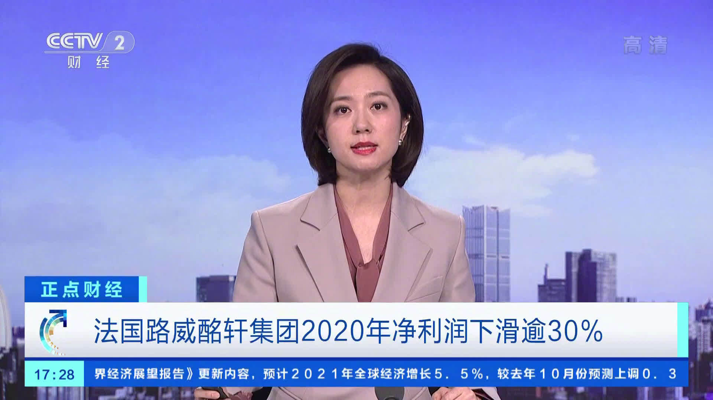

回复@涛落沙明-:今年上涨比例为23.77%，涨幅中位数是-7.09，最惨股票已经跌了58.68%。//@涛落沙明-:果然和我感觉的完全不同。感觉今年涨了好多。@ETF拯救世界:今日数据：目前全市场估值与2018年6月相似，已经进入“黄金坑”。我本人会在这个位置维持一定仓位，不会轻仓。（没有给你仓位建议的意思，也没有建议你买入或者卖出的意思。只是说明我自己的仓位，求求你无论涨跌别骂我。）
再说个具体的指数。比如中证红利。很多朋友觉得涨的少，不喜欢。但我不知道有多喜欢。目前它的估值与2018.06也基本一致，pb已经进入历史最低5%。但是注意，红利全收益指数从当时的6101涨到了现在的7262。也就是说，维持着历史最低估值不变，已经多赚了20%。年化8%以上。我可太喜欢了！pb不到1.2！@ETF拯救世界:今日数据：目前全市场估值与2018年6月相似，已经进入“黄金坑”。我本人会在这个位置维持一定仓位，不会轻仓。（没有给你仓位建议的意思，也没有建议你买入或者卖出的意思。只是说明我自己的仓位，求求你无论涨跌别骂我。）
刚才在评论里有朋友说，券商统计2018年1月至今只有20%的股民赔钱。我绝不相信。因为那个时候至今，只有31%的股票上涨。再考虑散户整体基本不可能黄金/钻石坑入场，怎么可能只有30%的股票上涨却有80%的股民挣钱？@ETF拯救世界:今日数据：目前全市场估值与2018年6月相似，已经进入“黄金坑”。我本人会在这个位置维持一定仓位，不会轻仓。（没有给你仓位建议的意思，也没有建议你买入或者卖出的意思。只是说明我自己的仓位，求求你无论涨跌别骂我。）
为什么会出现这种情况呢。我看了一下，2018年6月至今，可比的3495只股票中，上涨的是1643只，比例为47%。也就是说，指数从2847涨到3505，实际上超过一半（53%）的股票是下跌的。即使不算业绩上涨因素，全市场估值又回去了也非常正常。@ETF拯救世界:今日数据：目前全市场估值与2018年6月相似，已经进入“黄金坑”。我本人会在这个位置维持一定仓位，不会轻仓。（没有给你仓位建议的意思，也没有建议你买入或者卖出的意思。只是说明我自己的仓位，求求你无论涨跌别骂我。）
今日数据：目前全市场估值与2018年6月相似，已经进入“黄金坑”。我本人会在这个位置维持一定仓位，不会轻仓。（没有给你仓位建议的意思，也没有建议你买入或者卖出的意思。只是说明我自己的仓位，求求你无论涨跌别骂我。）
现在是3500点，股民不用说了，这几年股民其实是非常难的，如果你不是跟机构抱团。大概至少一半股民这几年没挣钱。基民的话，3500点，我没有依据的毛估估，其中也已经有20%-30%的人亏损了。我之前一再说，新朋友不要参考我的交易，最好也不要关注我，其实是对各位负责。
2015年发出第一条微博，2021年的今天，1万条了。5年多的时间，有人走，有人留，来来往往，有点热闹。5年多的时间，有些话说的对，有些话说得错，对对错错，请您多担待。下一个五年，又不知道大家都变成什么样子：赚了多少钱、结婚了没有、离婚了没有、生孩子了吗、孩子学习怎么样、升官了吗、涨工资了吗、财务自由了吗……五年后，我也要23岁了。想一想，也有点小伤感呢。下一个1万条，应该会来的更早一点吧。 抽奖详情
不讲武德！就差几个点上去碰一下怎么了？行，你不碰就下来，我们就继续提款……//@ETF拯救世界:如果能够站稳，第二压力位是31400左右。再往上就进入可减仓区域。@ETF拯救世界:恒生开始挑战第一压力位29200。
为什么散户不能逢高卖出PB4.8的抱团基金，在平均PB2倍的股票中找到一些优质的让机构来接盘呢。一句话，散兵游勇始终没有战斗力。@ETF拯救世界:目前市场已经出现极为诡异的情况。一方面是早上那个新闻：基金抱团股的PB已经从过去十年平均的2.x涨到了现在的4.x。另一方面，几乎一半的小股票PB只有不到2倍。目前的全市场估值居然与2018年6、7月差不多。那可是再过4个月就会迈入钻石坑的时候。大就一定好吗？小就一定差吗？我不信。我相信未来几年，一定有很多小股票涨幅巨大，当然，你得有这个本事从几千只里面选出它们……
这么看LV真的没法和茅台比。茅台营收977亿，利润可以干到455亿…@新浪财经:【#路威酩轩2020年净利润下滑逾30%#】法国奢侈品巨头路威酩轩集团26日发布的业绩报告显示，受新冠疫情影响，集团2020年销售额明显下滑，净利润下滑逾30%。财报显示，路威酩轩2020年销售额为447亿欧元，较2019年下滑17%；净利润为47亿欧元，较上年下滑34%。路威酩轩表示，虽然疫情对集团全球销售带来负面影响，但去年下半年亚洲市场呈强劲复苏态势，增幅超两位数。此外，线上销售大幅增长，也减轻了关闭部分门店的影响。央视财经的微博视频 42万次播放 00:27